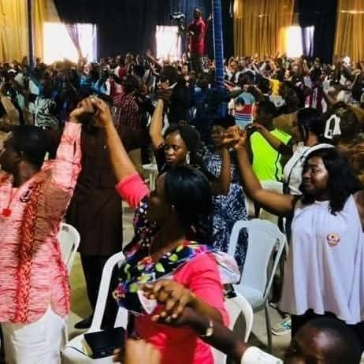
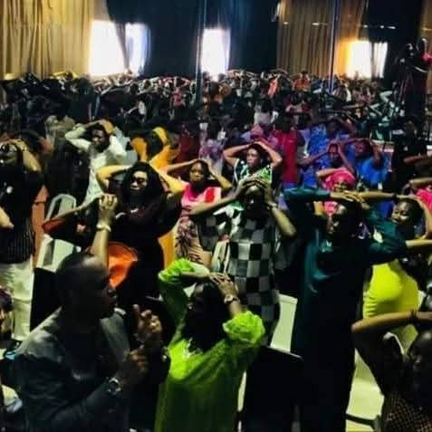
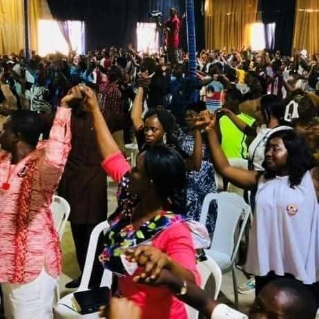
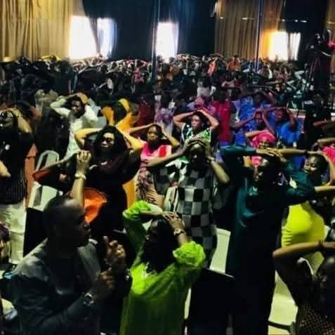
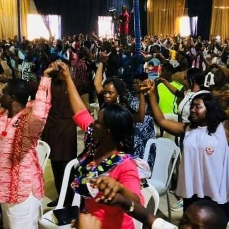
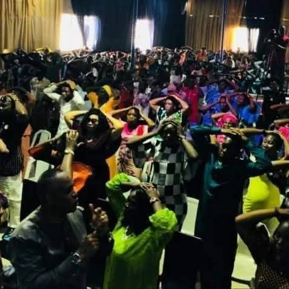
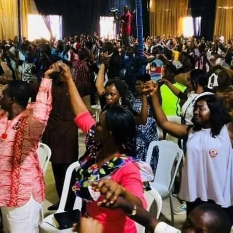
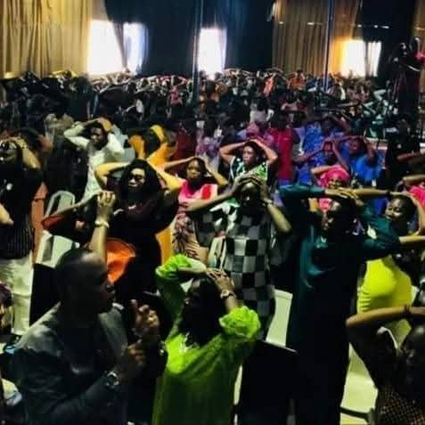

Welcome to Citadel of Mercy International Church — a family of believers where God’s Word, love, and the power of the Holy Spirit transform lives. We are dedicated to raising disciples who shine as lights in their generation, winning souls, and impacting society positively.
At Citadel of Mercy, we believe in prayer, worship, and the supernatural power of God to change every story. You are not just a visitor; you are part of this family!
8:00 AM – 11:00 AM
@ The Supernatural Church
8:00 AM – Morning Encounter
10:00 PM – Last Friday of the Month